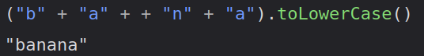

These are a few web games that I made with JavaScript when I was bored
during my freshman year of high school. Most of these aren't really that
good and the JavaScript is a complete mess. I'm not a JavaScript
developer and I personally don't actually like JavaScript that much as a
programming language.

But the school Chromebooks had a text editor and the only programming
language that I could mess around with was JS (I could use Google Chrome
to run my stuff).
Most of these games were made to be played with two people using the same
computer (usually one person uses arrow keys while the other uses WASD)
as I meant to play these games with some friends when I had nothing to do
or was bored in class (to be honest I was never good at these games and
actually usually lost most of the time which might say something about
my ability to play video games).
However, these games can be fairly buggy at times and weren't really
designed well (I was using a Chromebook at school so these are designed
for Google Chrome though Firefox seems to work just fine). Source code
is also available for download and you may use it for whatever purpose
you want (for those who care, consider the code
CC0 Licensed.)
Development became kind of painful after IT at my high school
figured out how to block inspect element (or were ordered to by the
school, it wasn't blocked until my freshman year). That was quite annoying
and I didn't particularly like JS as a programming language so I don't
intend on making any more of these games in the future. However, I might
clone some of these into C/C++ and make them into desktop applications
for fun.
Your browser needs to support JavaScript to run these games.
>
Racing Game
(about)
>
Capture the Flag
(about)